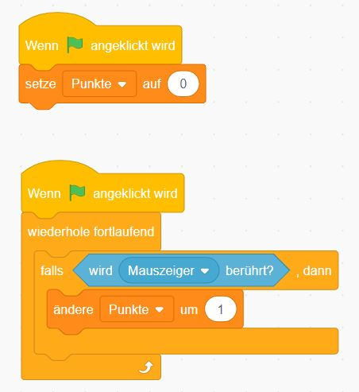

AG Programmieren
Materialien und Beispiele
Informationen zur AG
Was wir machen können:
- Spiele programmieren mit Scratch (blockbasierte Programmiersprache)
- Einfache Programme programmieren mit Python (textbasierte Programmiersprache)
- Einfache Webseiten bauen mit HTML und CSS (Gestaltungssprachen für Webseiten)
Was leider (noch) nicht geht:
- Lego Mindstorms NXT Roboter programmieren (die Programme dafür sind alt und funktionieren nicht problemlos auf modernen PCs)
Deshalb: Robotik AG → Programmieren AG
AG-Angebote
Beispiele
Asteroids
Bestandteile:
- ein Fadenkreuz
- zwei Asteroidenspawner
Hinweise:
- Das Fadenkreuz soll sich bei Mausklick zur Position der Maus bewegen.
- Wenn ein Asteroid angeklickt ist, soll dieser gelöscht werden und es wird ein Treffer gezählt.
- ein Fadenkreuz
- zwei Asteroidenspawner
- Das Fadenkreuz soll sich bei Mausklick zur Position der Maus bewegen.
- Wenn ein Asteroid angeklickt ist, soll dieser gelöscht werden und es wird ein Treffer gezählt.
Road Crosser
Bestandteile:
- eine Spielfigur
- drei Fahrzeugspawner
Hinweise:
- Die Spielfigur lässt sich mit WASD (alternativ Pfeiltasten) bewegen.
- Wenn ein Fahrzeug die Spielfigur berührt, soll die Spielfigur auf die Startposition zurückgesetzt werden.
- Wenn die Spielfigur eine bestimmte y-Position überschreitet (y-Position > "selbst gewählte Zahl"), gibt es einen Punkt und die Spielfigur wird auf die Startposition zurückgesetzt.
- eine Spielfigur
- drei Fahrzeugspawner
- Die Spielfigur lässt sich mit WASD (alternativ Pfeiltasten) bewegen.
- Wenn ein Fahrzeug die Spielfigur berührt, soll die Spielfigur auf die Startposition zurückgesetzt werden.
- Wenn die Spielfigur eine bestimmte y-Position überschreitet (y-Position > "selbst gewählte Zahl"), gibt es einen Punkt und die Spielfigur wird auf die Startposition zurückgesetzt.
Tappy Plane
Bestandteile:
- ein Flugzeug
- zwei Bergspawner
Hinweise:
- Das Flugzeug verliert dauerhaft an Höhe und mit Klick auf die Leertaste fliegt das Flugzeug wieder ein wenig nach oben.
- Die Berge spawnen am rechten Rand des Spielbereichs und bewegen sich dauerhaft nach links.
- Wenn die Berge eine bestimmte x-Position unterschreiten (x-Position < "selbst gewählte Zahl"), gibt es einen Punkt und die Bergklone werden gelöscht.
- Die beiden Berge sind im Wesentlichen gleich nur der Teil, der die Punkte hochzählt muss nur bei einem der Berge eingebaut werden.
- ein Flugzeug
- zwei Bergspawner
- Das Flugzeug verliert dauerhaft an Höhe und mit Klick auf die Leertaste fliegt das Flugzeug wieder ein wenig nach oben.
- Die Berge spawnen am rechten Rand des Spielbereichs und bewegen sich dauerhaft nach links.
- Wenn die Berge eine bestimmte x-Position unterschreiten (x-Position < "selbst gewählte Zahl"), gibt es einen Punkt und die Bergklone werden gelöscht.
- Die beiden Berge sind im Wesentlichen gleich nur der Teil, der die Punkte hochzählt muss nur bei einem der Berge eingebaut werden.
Kurzanleitungen
Bewegung mit WASD

Bei Spielbeginn sollte die Spielfigur auf die Startposition zurückgesetzt werden.
Wir brauchen eine "wiederhole dauerhaft"-Schleife damit das Spiel dauerhaft die Tasteneingaben überprüft.
Bewegung findet in Scratch durch veränderung der x-Position und der y-Position statt. Der Punkt in der Mitte des Spielfelds ist x=0, y=0.
Für Bewegung nach oben oder unten ändern wir y um eine Zahl bzw. Minus diese Zahl. Für Bewegung nach links oder rechts ändern wir entsprechend x.
Wir brauchen eine "wiederhole dauerhaft"-Schleife damit das Spiel dauerhaft die Tasteneingaben überprüft.
Bewegung findet in Scratch durch veränderung der x-Position und der y-Position statt. Der Punkt in der Mitte des Spielfelds ist x=0, y=0.
Für Bewegung nach oben oder unten ändern wir y um eine Zahl bzw. Minus diese Zahl. Für Bewegung nach links oder rechts ändern wir entsprechend x.
Objektspawner

Ein Spawner ist ein verstecktes Objekt irgendwo auf dem Bildschirm.
Der Spawner erstellt innerhalb der "wiederhole dauerhaft"-Schleife alle paar Sekunden einen neuen Klon von sich selbst.
Das Verhalten des gespawnten Klons wird unter dem Block "Wenn ich als Klon entstehe" erstellt.
Da das Objekt versteckt gespawnt wird, muss es sich erstmal wieder zeigen.
Danach können wir beispielsweise ein Bewegungsverhalten des Objektes erstellen.
Der Spawner erstellt innerhalb der "wiederhole dauerhaft"-Schleife alle paar Sekunden einen neuen Klon von sich selbst.
Das Verhalten des gespawnten Klons wird unter dem Block "Wenn ich als Klon entstehe" erstellt.
Da das Objekt versteckt gespawnt wird, muss es sich erstmal wieder zeigen.
Danach können wir beispielsweise ein Bewegungsverhalten des Objektes erstellen.
Einfaches Springen

Die einfachste Variante des Springens ist ein einfaches Gleiten nach oben und danach Gleiten nach unten.
Dafür nutzen wir den "gleite in 1 Sekunde nach"-Block, wobei wir als x die x-Position unserer Spielfigur und als y die y-Position unserer Spielfigur + die Höhe des Sprungs wählen.
Nach dem ersten "gleite in 1 Sekunde nach"-Block befindet sich die Spielfigur an einer neuen y-Position. Um wieder zur Ausgangsposition zurückzukommen, müssen wir einen zweiten "gleite in 1 Sekunde nach"-Block einbauen. Dieses mal wählen wir y als y-Position unserer Spielfigur - die Höhe des Sprungs.
Beim Springen kann die Tasteneingabe auch einfach über ein "Wenn Taste ... gedrückt wird"-Block geprüft werden.
Der Nachteil dieser Variante ist, dass die anderen Eingaben während des Sprungs von dem Programm geblockt werden, da erstmal beide "gleite in 1 Sekunde nach"-Blöcke ausgeführt werden.
Dafür nutzen wir den "gleite in 1 Sekunde nach"-Block, wobei wir als x die x-Position unserer Spielfigur und als y die y-Position unserer Spielfigur + die Höhe des Sprungs wählen.
Nach dem ersten "gleite in 1 Sekunde nach"-Block befindet sich die Spielfigur an einer neuen y-Position. Um wieder zur Ausgangsposition zurückzukommen, müssen wir einen zweiten "gleite in 1 Sekunde nach"-Block einbauen. Dieses mal wählen wir y als y-Position unserer Spielfigur - die Höhe des Sprungs.
Beim Springen kann die Tasteneingabe auch einfach über ein "Wenn Taste ... gedrückt wird"-Block geprüft werden.
Der Nachteil dieser Variante ist, dass die anderen Eingaben während des Sprungs von dem Programm geblockt werden, da erstmal beide "gleite in 1 Sekunde nach"-Blöcke ausgeführt werden.
Verbessertes Springen

Das einfache Springen lässt sich verbessern, indem wir die "gleite in 1 Sekunde nach"-Blöcke durch "wiederhole x-mal"-Blöcke ersetzen.
Das Wichtige hierbei ist, dass die Anzahl an Wiederholungen mal der Zahl, um die ihr y ändert, in beiden "wiederhole x-mal"-Blöcken bis auf das - Zeichen gleich ist.
So könnt ihr mit "wiederhole 5-mal" "ändere y um 20" schnell hochspringen und mit "wiederhole 10-mal" "ändere y um -10" langsamer fallen.
Das Wichtige hierbei ist, dass die Anzahl an Wiederholungen mal der Zahl, um die ihr y ändert, in beiden "wiederhole x-mal"-Blöcken bis auf das - Zeichen gleich ist.
So könnt ihr mit "wiederhole 5-mal" "ändere y um 20" schnell hochspringen und mit "wiederhole 10-mal" "ändere y um -10" langsamer fallen.
Punktesystem

Für ein Punktesystem brauchen wir eine Variable. Eine Variable ist in der Programmierung etwas, wo wir Werte (in Scratch hauptsächlich Zahlen) speichern, verändern und abrufen können.
Unter dem Menüpunkt "Variablen" lässt sich eine neue Variable beispielsweise mit dem Namen "Punkte" für alle Figuren erstellen.
Damit nicht die Punkte aus dem vorherigen Spiel übernommen werden, müssen wir bei Spielstart den Wert der Variablen "Punkte" erstmal auf 0 setzen.
Dann müsst ihr euch überlegen, wann es Punkte geben soll. Falls dieser Fall eintritt, ändert ihr einfach den Wert, der gerade in der Variablen "Punkte" gespeichert ist, um 1.
Unter dem Menüpunkt "Variablen" lässt sich eine neue Variable beispielsweise mit dem Namen "Punkte" für alle Figuren erstellen.
Damit nicht die Punkte aus dem vorherigen Spiel übernommen werden, müssen wir bei Spielstart den Wert der Variablen "Punkte" erstmal auf 0 setzen.
Dann müsst ihr euch überlegen, wann es Punkte geben soll. Falls dieser Fall eintritt, ändert ihr einfach den Wert, der gerade in der Variablen "Punkte" gespeichert ist, um 1.